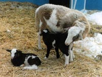

Suffolk (sire breed)
The Suffolk is one of the most commonly found breeds in Saskatchewan, originating from Suffolk county in England. The original Suffolks were the result of crossing Southdown
rams on Norfolk Horned
ewes. Apparently the product of this cross was a great improvement over
either one of the parents.
Establishing itself as a good milker which contributes to the rapid development of the young lamb, these sheep lack hair on their face and legs and, instead, they have a fine black hair. They have a deep, broad body with well-developed hind quarters. Mature Suffolk rams weigh from 250 to 350 pounds
(113-159 kg), and ewe weights vary from 180 to 250 pounds (81-113 kg). This breed is raised primarily for meat, and is not good for wool because of their lightweight fleece which may contain black fibers. Fleece weights from mature ewe are between five and eight pounds (2.25-3.6
kg) with a yield of 50 to 62 percent.
Hampshire (sire breed)
The Hampshire is another English sheep, developed in Hampshire county. The Hampshire-Down
evolved from the mingling of different strains of kindred blood from sheep
in co-existence along the borders of Hampshire County. Over the last century, Hampshires have been bred in North America to exhibit desirable characteristics. Hampshire sheep have the genetic ability to efficiently convert forage
into meat and fiber and are adaptable and productive in various geographic
regions.
This compact, blocky sheep has a large, open face with dark brown ears, eyes and face, and is an active sheep with a mild disposition. The ears are moderate in length, thick, covered with a coarse dark brown or black hair and free from wool. The Hampshire is a heavy eater (and has rapid growth) which produces good, meaty lamb carcasses and fleece that is fairly dense. Mature ewes will average a six to ten pound (2.7-4.5 kg) fleece. The lambs are born large and they grow fast. Mature rams should weigh 275 pounds or more and mature ewes should weigh
200 pounds or more in breeding condition. The breed is often used for crossbreeding.
Dorset (dual purpose breed)
The Dorset was developed in Dorset and Somerset in England. Dorsets are one of the oldest of the Downs breeds. They are a dual-purpose breed with a unique trait held by dorset ewes; the ability to breed anytime, allowing them to produce offspring twice in the same year. This makes the breed ideal for producing Easter lamb. The ewes are good mothers, good milkers and multiple births are not uncommon. The dorsets are noted for their white face and heavy milk production. They are white-faced, medium sized and noted for its excellent ability to complement other breeds. They have good body length and muscle conformation to produce a desirable
carcass. Dorset ewes weigh from 150 to 200 pounds at maturity and rams weigh from 225 to 275 pounds at maturity. Dorsets have short wool that is very white, strong, close and free from dark fiber. The fleeces (ewes) average five to nine pounds (2.25-4 kg) in with a yield of between 50% and 70%. The breed may be polled or horned. Polled Dorsets originated at North Carolina State College in the United States as the result of a mutation which occurred in the
purebred Horned Dorset flock at the college. After careful research and
testing were done to assure that the Polled Dorset carried the same characteristics as the Horned Dorsets and were able to propagate these traits, the new strain was registered in the 1950's.
Rambouillet (ewe breed)
The history of the Rambouillet sheep began
more than two centuries ago. The Rambouillet breed originated with Spain's
famed Merino flocks, which were known from the earliest times as producers of the world's finest wool. The Spanish government was so protective of their Merino flocks that any exportation was forbidden.
This policy changed in 1786, however, when the King of Spain granted
a request from the government of France and sent 359 carefully selected
rams and ewes to help improve the native French stock. The sheep were sent
to the Rambouillet farm near Paris where, according to government records,
they have been bred since 1801. Other flocks were bred in the same manner in Germany and the North American flocks are descendants of either one of these originating flocks.
The Rambouillet is a dual-purpose animal, commonly raised on range in western Canada. They also adapt well to intensive management conditions. They are a large heavy boned animal, very strong and vigorous. The rams (male) have large spiral shaped horns, while the ewes (females) are hornless. Mature Rambouillet
rams weigh between 250 and 300 pounds (113-135 kg), ewes range from 150
to 200 pounds (68-90 kg). This breed is known for its high quality, fine wool. Mature ewes will have a fleece weigh of
8 to 18 pounds (3.6-8.1 kg) with a yield of 35 to 55 percent.
Colombia (dual purpose breed)
This dual-purpose animal was developed for range conditions. Columbia sheep were developed by the United States Department of Agriculture
as a true breeding type to replace cross breeding on the range. In 1912,
rams of the long wool breeds were crossed with high quality Rambouillet
ewes to produce large ewes yielding more pounds of wool and more pounds
of lamb.
While they were originally developed for range conditions, they have proved admirably adaptable to lush grasses and farm flock management.
The mature Columbia rams weigh between 225 and 300 pounds (100-135 kg)
and the females weigh 150 to 225 pounds (68 - 102 kg). They are noted for their longevity and high-yielding wool clip. The average
fleece weight of the ewes ranges from 10 to 16 pounds (4.5 - 7.3 kg) with
a yield of 45 to 55%. The breed has a high growth rate and superior maternal characteristics.
North Country Cheviot (sire breed)
North Country
Cheviots are a "hill breed" of sheep and they evolved on the rugged Scotch
highlands. They were first imported into North America in 1944. These sheep are intelligent, self-reliant, resourceful
and among the healthiest and most long lived breeds. The newborn lambs have the ability to get-up, nurse and run just minutes after their birth. The ewes have strong protective instinct toward their lambs, have plenty of milk and take extremely good care of their lambs. A mature ewe will weigh 180 pounds and a mature ram 300 pounds. North Country
Cheviot rams impart vigor and muscling to their lambs. They are aggressive,
active breeders and an ideal crossing breed.
North Country Cheviots produce
both a superior lamb crop and a fleece that delights handspinners. It has
outstanding crossbreeding ability and can be used as either the sire or
the dam breed. The resulting lambs from cross-breeding to meat breeds have
superior carcasses.
This breed is a large
chalk-white, alert deep-bodied sheep, symmetrical in outline, belly and
flanks well covered with wool. The head is covered with short, glossy-white
hair as are the legs and the breed is polled.
Legs are medium long in proportion to size, good bone, strong pasterns
and the hoofs are black. The wool fibres are short, pure white, lofty and strong, with
very good staple length and an average fleece should weigh 8 to 10 pounds It is not hard, but has a spongy feeling when
grasped. The wool is largely used in the Scottish tweed trade.
|
|
Canadian Arcott (sire breed)
This is a breed that was developed in Canada and is able to withstand the harsh conditions here. Canadian Arcott is a rapid growing, well muscled meat-type breed developed for crossing with hybrid ewes to produce crossbred market lambs. It is a terminal sire breed with good carcass characteristics. The sheep is medium framed, white-faced and is a medium wool breed.
|
Katahdin
Katahdin sheep are a breed of hair sheep developed in the United States. This is a small framed, hardy, adaptable, low maintenance sheep that produce superior lamb crops and lean, meaty carcasses. They are one of the hair breeds, and do not produce a fleece, therefore, do not require shearing. Katahdin sheep are medium-sized and
efficient, bred for utility and for production in a variety of management
systems. Katahdins are docile so are easily handled. They are very adaptable to climatic conditions. For example, in cold weather, they grow a very
thick winter coat, which then sheds during warm seasons. The shedding of this meat sheep contributes to its popularity as a low maintenance livestock breed. Their smooth
hair coat and other adaptive characteristics allow them to tolerate heat
and humidity well. Katahdins are also significantly tolerant of internal
and external parasites and if managed carefully require only minimal parasite
treatment.

They tend to gain slower than traditional breeds. Lambs produce a high quality, well-muscled carcass that is naturally
lean and consistently offers a very mild flavor. Live weight of a mature ewe in good condition usually ranges from 120
to 160 pounds; a mature ram will weigh 180 to 250 pounds. Average
birth weight of twins is about 8 pounds. This image shows a mother and her twins. The quality of wool is lowered when crossed with other wool breeds. The ewes will breed out-of-season. Ewes and rams exhibit early puberty and generally have a long productive
life. Mature ewes usually have twins, occasionally producing triplets
or quadruplets. Ewes have exceptional mothering ability and lamb easily;
lambs are born vigorous and alert.
Other breeds are mentioned below, however, there are very few of these in Canada.
Corriedale
The Corriedale is a dual purpose sheep, developed in New Zealand and Australia. The breed has a good carcass, and heavy, good quality fleece. The ewes have a long-fibred wool allowing the wool to fetch a good price.
Leicester (Border)
The Leicester, like the Border Cheviot, was developed on the border between Scotland and England. This breed has a clean white face; long, open curly fleece; and ears and legs which are covered with a fine white hair. Leicester ewes are good mothers, good milkers, and often give birth to twins. In nova Scotia the Leicester is often bred with North County Cheviot to produce Scotia half-bred ewes.
Montadale
The montadale breed is a medium wooled sheep used in United States. Known for its uniform high quality fleece. The montadale breed is also considered to have good mothering ability. Often they are used in crossbred production for increased ruggedness and to increase the reproductive performance of other breeds.
|